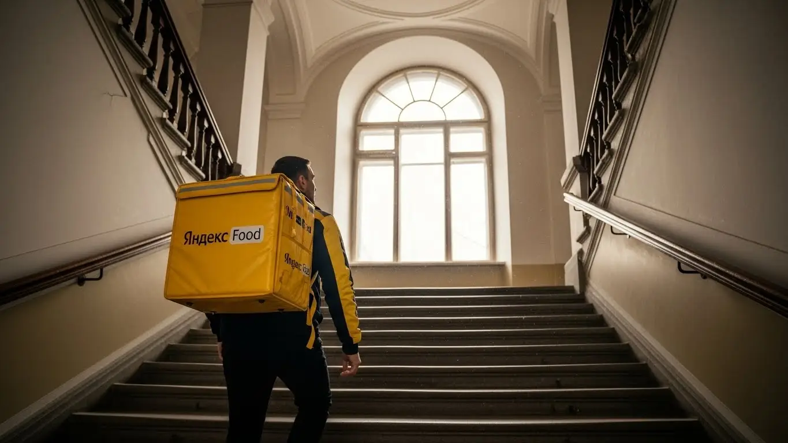

Работа курьером Яндекс Еда в Мытищах 2025-2026: доход и условия
- Работа курьером Яндекс Еды в Мытищах: для кого эта вакансия и что вы получите
- Сколько вы будете зарабатывать курьером в Мытищах: калькулятор дохода и разбор выплат
- Реальный заработок курьера в Мытищах: смены и месячный доход
- График работы и форматы занятости
- Требования к кандидату и документы
- Самозанятость, налоги и юридическая чистота
- Пошаговое оформление и первый выход на линию в Мытищах
- Пешком, на вело или на авто: что выгоднее в Мытищах
- Районы, маршруты и «топовые» зоны заказов в Мытищах
- Безопасность, страховка, штрафы и оплата простоя
- Плюсы и возможные минусы работы курьером в Мытищах
- Реальные истории и отзывы курьеров из Мытищ
- Ответы на главные вопросы о работе курьером Яндекс Еды в Мытищах
- Короткие ответы на главные вопросы
- Итоги и твой следующий шаг
Все города
Думаешь крутить педали или жечь бензин по Мытищам, доставляя заказы? Боишься, что весь заработок съедят штрафы, налоги и ремонт велика после наших дорог? Или что намертво застрянешь в вечной пробке на Ярославке или у ТЦ «Июнь», пока заказ стынет в коробе? Забудь про рекламные сказки про «доход до 150 тысяч». Я расскажу, как на самом деле выглядят условия работы курьером в Яндекс Еда и Лавке — именно в нашем городе, а не в вакууме.
Поверь, без понимания местной «кухни» ты рискуешь сдуться через месяц. Одно дело — видеть красивые цифры в приложении, и совсем другое — вычесть из них бензин, налог самозанятого и понять, почему в старых районах заказы сыпятся один за другим, а в новостройках можно прождать час. Чтобы заранее оценить все нюансы, изучи подробные условия и калькулятор дохода на официальной странице: работа курьером Яндекс Еда в Мытищах — это поможет избежать большинства ошибок новичков. Большинство из них наступают на одни и те же грабли: берут невыгодные заказы в час пик, убивают подвеску на разбитых дворовых дорогах или просто не знают, как работает система приоритета.
Здесь мы честно разберём, что выгоднее в Мытищах — велосипед, самокат или своя машина. Посчитаем, сколько чистыми остаётся в кармане после всех расходов. Выясним, в каких районах, от Леонидовки до Перловки, самый «жирный» спрос и где лучше не появляться в снегопад. Я на примерах покажу, как погода и трафик влияют на заработок, как не нарваться на штраф и что делать, если клиент не выходит на связь.
Меня зовут Алексей. Я сам не один год откатал курьером по Мытищам, а сейчас держу свой небольшой таксопарк-партнёр. Так что я знаю эту систему со всех сторон — и как она выглядит из приложения курьера, и как из админки партнёра. Хватит теории. Давай по порядку разложу по полочкам всю правду о работе в нашем городе.
Прежде чем нырять в детали, давай быстро пробежимся по ключевым моментам. Этот короткий гид поможет сориентироваться в статье.
Что ты точно узнаешь из этого разбора
В этой статье ты ТОЧНО узнаешь:
- Сколько реально заработать в Мытищах за смену на авто, велосипеде или пешком, и от чего зависит итоговая сумма?
- В каких районах Мытищ (от Перловки до центра) больше всего заказов и как ловить «фиолетовые зоны» с повышенной оплатой?
- За что на самом деле штрафуют в Яндекс Еде и как не потерять рейтинг, который напрямую влияет на количество заказов?
- Как за 10 минут оформить самозанятость, сколько платить налогов и почему это проще и безопаснее, чем работать «в серую»?
- Как устроен свободный график на самом деле и как планировать слоты, чтобы совмещать доставку с учёбой или основной работой?
- Что такое «оплата простоя» и как она защищает твой доход, если заказов в смене оказалось мало?
А если тебе некогда читать всю статью — переходи сразу к заключению, где ты найдёшь короткие ответы на все эти вопросы и указания, в каких разделах искать подробности.
А чтобы сразу увидеть общую картину, вот наглядная инфографика.
Работа курьером в Мытищах: ключевые цифры
Работа курьером Яндекс Еды в Мытищах: для кого эта вакансия и что вы получите
Кому подойдёт эта работа в Мытищах
Давай начистоту: эта работа не для всех, но для многих она — настоящая находка. В Мытищах курьером в Яндекс Еде часто идут студенты, которым нужна подработка после пар. Свободный график позволяет легко совмещать доставку с учёбой, а ежедневные выплаты — это возможность иметь карманные деньги, не дожидаясь стипендии. Также это отличный старт для тех, у кого нет опыта работы. В Яндекс Еде не смотрят на резюме, главное — желание работать и наличие смартфона с приложением «Яндекс Про».
Кроме того, это хороший вариант для тех, кто ищет дополнительный заработок. Можно выходить на пару часов вечером или плотно поработать в выходные — никто не будет стоять над душой с планом. Водители-курьеры на своем авто тоже находят здесь выгоду: можно развозить заказы, покрывая расходы на бензин и зарабатывая сверху. В общем, если тебе важны условия работы со свободным графиком, ежедневные выплаты и ты не боишься движения — это твой вариант.
Главные преимущества для жителей районов Перловка, Леонидовка, микрорайон Ярославский
Главный плюс работы курьером в Мытищах — возможность доставлять заказы буквально в соседнем дворе. Тебе не нужно тратить час-полтора, чтобы добраться до «рыбной» зоны. Живёшь в Перловке? Отлично, здесь полно и многоэтажек, и частного сектора, заказы есть всегда. Обитаешь в Леонидовке? Тоже хороший вариант, рядом много кафе и магазинов, откуда идёт доставка.
А если ты из новых кварталов, например, из микрорайона Ярославский, то это вообще джекпот. Там высокая плотность населения, много молодых семей, которые постоянно заказывают еду и продукты. Ты просто выходишь из подъезда, включаешь приложение «Яндекс Про» и через пару минут уже несёшь первый заказ. Это экономит кучу времени, сил и денег на проезд.
Краткое обещание по доходу и условиям
Если говорить о деньгах, то зарплата курьера в Мытищах вполне приличная. Активный курьер за смену 8–10 часов может спокойно заработать 3500–4500 рублей. Если выходить на подработку на 4–5 часов в пиковое время, то 1500–2500 рублей — это реальность. В месяц при полной занятости можно выйти на доход в 70 000 – 95 000 рублей и даже больше, если работать с умом и ловить бонусы.
Ключевые условия работы в Яндекс Еде просты и прозрачны. Во-первых, свободный график — ты сам решаешь, когда и сколько работать. Во-вторых, ежедневные выплаты на твою карту — отработал смену, и деньги у тебя. В-третьих, начать можно без опыта, всему научат на коротком онлайн-инструктаже. Никаких сложных собеседований и испытательных сроков.
Вот тебе пример из жизни. Есть знакомый парень, студент МГОУ, живёт как раз в Перловке. Он работает велокурьером по 3-4 часа после учёбы. Катает по своему району, знает все короткие пути. За неделю набегает 8-10 тысяч рублей чисто на карманные расходы. Говорит, что это идеальный вариант, чтобы и на учёбу время оставалось, и свои деньги были.
В итоге, работа курьером в Яндекс Еде в Мытищах — это доступный способ заработка для студентов, людей без опыта или тех, кому нужна подработка. Главные плюсы — работа рядом с домом и полный контроль над своим графиком и доходом. Мой совет: начни со своего района, так ты быстрее освоишься и поймёшь, как всё устроено, не тратя время на дорогу.
Сколько вы будете зарабатывать курьером в Мытищах: калькулятор дохода и разбор выплат
Из чего складывается доход курьера
Твой заработок — это не просто фиксированная ставка, а конструктор из нескольких частей. Понимание этой системы поможет тебе зарабатывать больше. Во-первых, это базовая оплата за каждый выполненный заказ, которая зависит от способа доставки и сложности. Во-вторых, к ней прибавляется доплата за расстояние — чем дальше везти, тем больше денег.
Кроме этого, есть повышающие коэффициенты. В часы пик, в плохую погоду или в зонах высокого спроса (например, у ТРЦ «Красный Кит») стоимость заказов умножается на коэффициент, который виден в приложении Яндекс Про. Также есть персональные бонусы за выполнение целей и чаевые — они полностью твои. И два важных момента: оплата простоя, если ты на слоте, а заказов нет, и возможная компенсация проезда на общественном транспорте для пеших курьеров на дальних маршрутах.

Как пользоваться калькулятором дохода
Чтобы прикинуть свой возможный заработок, воспользуйся специальным калькулятором. Пользоваться им просто. Сначала выбираешь свой город — Мытищи. Затем указываешь, как планируешь доставлять: пешком, на велосипеде или на своем авто. От этого сильно зависит и скорость, и потенциальный доход.
Далее выставляешь, сколько часов в день и сколько дней в неделю ты готов работать — например, 4 часа 5 дней в неделю как подработку или полноценные 8 часов 6 дней в неделю. Калькулятор покажет примерный диапазон твоего дохода за день и за месяц. Это прогноз, а не гарантия, но он даёт хорошее представление о том, на какие цифры можно ориентироваться в Мытищах.
Калькулятор дохода курьера в Мытищах
8 часов
5 дней
* Расчет основан на средней ставке для Мытищ и не учитывает бонусы, чаевые и повышенные коэффициенты в часы пик. Реальный доход может отличаться.
Чтобы увидеть самые актуальные цифры и подать заявку, загляни на страницу про работу курьером Яндекс Еда в твоём городе — там есть все условия, калькулятор и форма для заполнения.
Примеры расчёта для пешего, вело- и авто‑курьера в Мытищах
Давай разберём на конкретных примерах, чтобы было понятнее.
- Пеший курьер в центре. Допустим, ты работаешь пешком в районе станции Мытищи и ТРЦ «Июнь». Здесь плотная застройка, много кафе, заказы короткие. За 4-часовой вечерний слот в будний день можно выполнить 6–8 заказов. С учётом бонусов и возможных чаевых твой доход составит примерно 1400–1800 рублей.
- Велокурьер между спальными районами. На велосипеде ты мобильнее. Представим, что ты работаешь 6 часов в субботу, курсируя между микрорайоном Ярославский и старыми Мытищами. Ты сможешь делать более длинные доставки и выполнять 10–14 заказов. Заработок за такую смену может составить 2500–3200 рублей.
- Водитель-курьер на своем авто. На машине ты покрываешь самые большие расстояния, включая заказы в Пироговский или Королёв. За полную 8-часовую смену, особенно в дождливую погоду с высокими коэффициентами, можно выполнить 15–20 заказов. Доход автокурьера за такой день может достигать 4000–5500 рублей (уже за вычетом примерных расходов на бензин).
Расскажу случай. Один знакомый водитель-курьер, Сергей, работает в Мытищах. Как-то в пятницу вечером пошёл сильный ливень. Спрос взлетел до небес, коэффициенты в приложении Яндекс Про горели фиолетовым. Сергей взял слот на 4 часа, работал в основном по новым районам и у крупных ТЦ. За это время он заработал почти 3000 рублей, потому что не испугался погоды и был на машине, в то время как многие пешие курьеры остались дома.
Итак, твой итоговый заработок в Яндекс Еде складывается из многих факторов: оплаты за заказ и расстояние, коэффициентов, бонусов и чаевых. Важно помнить и про такие фишки, как оплата простоя. Чтобы понять, на что рассчитывать, используй калькулятор, но всегда держи в голове, что реальный доход зависит от твоей активности, времени и места работы. Мой совет: не бойся экспериментировать с разными районами и временем смен, чтобы найти свой самый выгодный график.
Реальный заработок курьера в Мытищах: смены и месячный доход
Давай к главному — к деньгам. Сразу скажу: фиксированной зарплаты в Яндекс Еде нет. Твой заработок — это то, что ты набегал или наездил, плюс бонусы и чаевые. Он зависит от твоего транспорта, сколько часов ты на линии и, что самое важное, когда и где ты работаешь. В Мытищах, как и везде, есть свои «рыбные» места и часы, и моя задача — научить тебя их видеть. Забудь про обещания «до 200 тысяч в месяц», давай считать реальные цифры, которые ты сможешь положить в карман.

Диапазон дохода для подработки и полной занятости
Если ты ищешь подработку на 2–4 часа в день, чтобы закрыть какие-то свои расходы, то цифры в Мытищах будут примерно такие. Пеший курьер может рассчитывать на 800–1500 рублей за короткую смену. Велокурьер, за счёт скорости, сделает уже 1000–2000 рублей. Водитель на своем авто за те же 3–4 часа в пиковое время может заработать и 1500, и 3000 рублей, особенно если будет брать заказы из гипермаркетов или в рамках Яндекс Доставки на дальние расстояния в сторону Королёва или Пушкино.
При полной занятости, когда ты работаешь по 8–10 часов в день, зарплата совсем другая. Пеший курьер в месяц может стабильно делать 50 000 – 70 000 рублей. Велосипедист — уже 60 000 – 90 000 рублей, потому что он быстрее и меньше устаёт на длинных дистанциях. Автокурьер при полном графике в Мытищах выходит на 80 000 – 120 000 рублей и выше. Конечно, из этих денег нужно вычесть расходы на бензин и налог для самозанятых, но даже с учётом этого заработок получается достойный.
Как район, время суток и погода влияют на доход
Твой главный инструмент для увеличения заработка — это понимание, где и когда нужно быть. В Мытищах основной спрос на доставку концентрируется вокруг крупных ТРЦ, таких как «Июнь» и «Красный Кит», а также в густонаселённых жилых комплексах, например, в районе «Ярославский». Утром и днём заказов больше в центре, а вечером спрос смещается в спальные районы.
Самые денежные часы — это обеденный пик (с 12:00 до 15:00) и вечерний (с 18:00 до 22:00), а также все выходные и праздничные дни. В это время в приложении Яндекс Про появляются зоны с повышенными коэффициентами — они окрашиваются в разные цвета, от жёлтого до фиолетового. Работа в такой зоне может умножить стоимость заказа в 1.5, 2, а то и в 3 раза. А если на улице дождь, снегопад или сильная жара — считай, ты сорвал джекпот. Многие курьеры сидят дома, а заказов становится в разы больше. Клиенты в такую погоду и коэффициенты оплачивают охотнее, и на чаевые не скупятся.
Советы по увеличению заработка от опытных курьеров
Вот несколько практических советов, чтобы зарабатывать больше, а не просто дольше работать. Во-первых, всегда старайся брать плановые слоты в пиковые часы — вечера будних дней и выходные. Так у тебя будет приоритет в распределении заказов. Во-вторых, изучи карту спроса в приложении Яндекс Про и не гоняйся за одним заказом через весь город. Лучше выбрать одну «горячую» зону, например, центр Мытищ в обед, и работать внутри неё, выполняя короткие и быстрые заказы один за другим.
Не зацикливайся на одном типе доставки. Если у тебя есть и велосипед, и машина, используй их по ситуации. В час пик, когда центр Мытищ и выезды на Ярославское шоссе стоят, велокурьер будет гораздо эффективнее для коротких заказов. А вот для доставки из гипермаркетов, например, из Яндекс Маркета, или в соседние посёлки лучше подойдёт автомобиль. И главный совет: всегда будь вежлив с клиентами и сотрудниками ресторанов. Хороший рейтинг и положительные отзывы напрямую влияют на то, какие заказы и бонусы тебе будет предлагать система Яндекса.
Сравнение дохода в Мытищах по типу занятости
| Тип курьера | Подработка (2–4 часа/день) | Полная занятость (8–10 часов/день) |
|---|---|---|
| Пеший курьер | 800 – 1 500 ₽ | 2 500 – 3 500 ₽ |
| Велокурьер | 1 000 – 2 000 ₽ | 3 000 – 4 500 ₽ |
| Автокурьер | 1 500 – 3 000 ₽ | 4 000 – 6 000+ ₽ |
В итоге, твой заработок в Яндексе — это не лотерея, а результат грамотного планирования. Основные деньги приносят не длинные смены, а работа в правильное время и в правильном месте. Поэтому всегда анализируй карту спроса в приложении Яндекс Про и не бойся плохой погоды — именно она часто приносит самый большой доход.
График работы и форматы занятости
Одно из главных преимуществ этой работы — свободный график. Ты сам себе начальник и сам решаешь, когда выходить на линию. Никто не будет стоять над душой и требовать отработать с 9 до 6. Хочешь — работай по утрам, хочешь — только по выходным. Эта гибкость позволяет легко совмещать доставку с учёбой, основной работой или любыми другими делами. Главное — понимать, как устроена система слотов и как планировать своё время для максимальной выгоды.
Подработка после учёбы или основной работы
Совмещать доставку с другой деятельностью проще простого. Вот пара реальных примеров. Есть парень, студент МГОУ, живёт в Мытищах. Он выходит на смены на велосипеде после пар, обычно с 18 до 22 часов, плюс берёт длинную смену в субботу, доставляя заказы Яндекс Еды. За неделю у него набегает 15–20 часов, что приносит ему стабильные 25-30 тысяч рублей в месяц. Этих денег ему с головой хватает на личные расходы, и он не зависит от родителей.
Другой пример — мужчина, который работает в офисе до пяти вечера. У него своя машина. Три-четыре раза в неделю он после работы включает приложение Яндекс Про и выполняет заказы по пути домой и в своём районе. В выходные может поработать подольше, если есть настроение. Такая подработка приносит ему дополнительные 30-40 тысяч в месяц, которые он откладывает на отпуск с семьёй. Он не упахивается, а просто эффективно использует своё свободное время и автомобиль.
Полная занятость: как выглядит типичный день курьера
Если рассматривать доставку как основную работу, то день строится вокруг пиков спроса. Типичный день автокурьера в Мытищах выглядит так: он выходит на линию около 10 утра. Утренние часы — это в основном доставка не еды, а посылок и документов в рамках Яндекс Доставки. С 12:00 начинается обеденный бум — курьер старается держаться ближе к центру, где много офисов и ресторанов, например, в районе улицы Мира или Новомытищинского проспекта.
После 15:00 наступает небольшое затишье. Это время можно использовать для обеда, отдыха или выполнения дальних заказов с меньшей срочностью. А примерно с 18:00 и до 22:00 — снова пик, самый прибыльный. Заказы Яндекс Еды идут валом из жилых кварталов, люди возвращаются с работы и заказывают ужин. Курьер курсирует по спальным районам, развозя еду и продукты. К 23:00 он заканчивает смену, смотрит в приложении итоговый заработок за день и едет домой.
Как планировать слоты и выходы через приложение «Яндекс Про»
Управлять своим графиком ты будешь через приложение Яндекс Про. Там есть два основных режима: свободный выход и плановые слоты. Свободный выход — это когда ты просто нажимаешь кнопку «На линию» и начинаешь получать заказы. Удобно, но в часы низкого спроса можно просидеть без дела. Плановые слоты — это когда ты заранее бронируешь время и район работы. Это даёт тебе приоритет при распределении заказов и, в некоторых случаях, гарантированный доход в час, даже если заказов было мало.
Планировать слоты нужно заранее, особенно на вечер и выходные — их быстро разбирают. В приложении ты видишь карту Мытищ, разделённую на зоны. Выбираешь ту, где хочешь работать, и доступные временные интервалы. Крайне важно не опаздывать на начало слота. Система фиксирует твоё появление в зоне, и регулярные опоздания негативно сказываются на твоём рейтинге. А высокий рейтинг — это доступ к большему количеству заказов и бонусов от Яндекса.
В общем, твой график работы полностью в твоих руках, и это огромный плюс. Но чтобы доход был стабильным, нужно подходить к планированию с умом. Мой совет: если нужна стабильность, выбирай плановые слоты в зонах с высоким спросом. И всегда будь пунктуален — это напрямую влияет на твой заработок и доступ к лучшим заказам.
Требования к кандидату и документы
Многих новичков пугает этап с документами и требованиями. Кажется, что сейчас начнётся бюрократия, как при устройстве на завод. На деле всё гораздо проще. Система специально выстроена так, чтобы ты мог как можно быстрее выйти на линию, а не бегал по инстанциям. Главное — соответствовать нескольким базовым условиям и иметь под рукой стандартный набор документов.
Возраст, гражданство и базовые условия
Давай сразу по ключевым пунктам. Чтобы стать курьером Яндекс Еды, тебе должно быть полных 18 лет. Это строгое правило, связанное с материальной ответственностью и юридическими аспектами договора. Никаких исключений для 16-летних, даже с согласия родителей, здесь нет.
По гражданству условия тоже чёткие: принимают граждан России и стран Евразийского экономического союза (ЕАЭС), куда входят Беларусь, Казахстан, Армения и Кыргызстан. Если у тебя паспорт РФ, проблем не будет. Для граждан ЕАЭС понадобится стандартный пакет документов, подтверждающих легальное пребывание в стране.
Кроме того, для работы курьером нужен смартфон на базе Android, так как приложение «Яндекс Про» работает именно на этой системе. Насчёт физической формы — от тебя не требуют олимпийских рекордов. Но будь готов, что пеший курьер или велокурьер проводит на ногах по несколько часов, так что минимальная выносливость понадобится.
Какие документы нужны для работы курьером
Список документов минимальный, и скорее всего, всё необходимое у тебя уже есть. Тебе не придётся собирать кипу справок. Вот что нужно подготорить:
- Паспорт. Основной документ для подтверждения личности и возраста. Гражданам ЕАЭС — национальный паспорт с нотариально заверенным переводом и документы, подтверждающие право на работу в РФ.
- ИНН (Идентификационный номер налогоплательщика). Он нужен для регистрации в качестве самозанятого. Если ты не помнишь свой номер, его можно за пару минут бесплатно узнать на сайте Федеральной налоговой службы (ФНС) по паспортным данным.
- Банковская карта. Подойдёт карта любого российского банка, оформленная на твоё имя. Именно на неё будут приходить все выплаты.
- Медицинская книжка. Здесь есть нюанс. Для доставки заказов из ресторанов, где еда уже упакована, медкнижка на старте чаще всего не требуется. Но если ты планируешь работать с доставкой продуктов из магазинов («Яндекс Лавка») или выполнять некоторые заказы сервиса «Яндекс Доставка», она будет обязательна. Мой совет: начни без неё, а если поймёшь, что эта подработка тебе подходит, сделай медкнижку, чтобы расширить географию и тип заказов.
Можно ли работать с 16 лет и какие есть альтернативы
Отвечу прямо, чтобы не тратить твоё время: устроиться курьером в Яндекс Еду с 16 или 17 лет нельзя. Условия чёткие: минимальный возраст — 18 лет, без компромиссов. Это связано с тем, что работа предполагает заключение официального договора и полную материальную ответственность за заказы и денежные средства, а законодательство накладывает на работу несовершеннолетних серьёзные ограничения.
Какие есть альтернативы для подростков в Мытищах? Можно рассмотреть более традиционные варианты подработки, где нет такой материальной ответственности. Например, раздача листовок у ТРЦ «Июнь» или «Красный Кит», работа промоутером на акциях, помощь в кофейнях или летних кафе. Да, это не так технологично и гибко, как работа с приложением, но это легальный способ заработать первые деньги до совершеннолетия.
Как-то ко мне в парк просился парень, 19 лет, студент. Он был уверен, что для оформления нужна целая папка бумаг, как у его отца на заводе. Мы сели, и я показал ему, что всё проще. Паспорт у него был с собой, номер ИНН мы нашли на сайте налоговой за три минуты. Медкнижки не было, но это не помешало ему зарегистрироваться и в тот же вечер выйти на первые заказы из ресторанов в районе улицы Лётной. Через месяц, когда он уже освоился и захотел брать больше заказов, он спокойно сделал медкнижку и начал доставлять ещё и из магазинов.
В итоге, чтобы стать курьером, нужно соответствовать стандартным требованиям: совершеннолетие, гражданство РФ или ЕАЭС и базовый пакет документов. Ничего сверхъестественного сервис не просит. Главный совет — заранее проверь свой ИНН онлайн, чтобы не тратить на это время при заполнении анкеты.
Самозанятость, налоги и юридическая чистота
Слово «самозанятость» и «налоги» у многих вызывают нервный тик. Кажется, что это сложно, муторно и связано с походами в налоговую. Расслабься. В случае с курьерами Яндекса всё сделано максимально просто и для людей. Это не ИП с его декларациями и бухгалтерией, а современный и удобный формат, который защищает тебя и делает твой доход полностью официальным.
Почему курьеры Яндекс Еды работают как самозанятые
Формат самозанятости (или налог на профессиональный доход, НПД) выбрали не случайно. Это самый простой способ легализовать отношения между тобой и сервисом. Во-первых, это даёт тебе официальный доход. Все твои заработки — «белые», их видит государство. Это значит, что ты без проблем сможешь, например, получить кредит в банке или визу, подтвердив свой доход справкой из приложения.
Во-вторых, такое оформление избавляет от любой бумажной волокиты. Тебе не нужно вести бухгалтерию, сдавать отчёты и декларации — вся отчётность формируется автоматически. Ты просто работаешь, а система сама считает, сколько ты заработал и какой налог нужно заплатить. Это легально, прозрачно и безопасно. Ты не работаешь «в серую», а значит, защищён от обмана и имеешь чёткие договорные отношения с платформой.
Как за 10 минут оформить самозанятость через «Мой налог»
Регистрация занимает не больше времени, чем заказ пиццы. Никуда ходить не нужно, всё делается через телефон. Вот простая пошаговая схема:
- Скачай приложение «Мой налог». Оно есть в Google Play и App Store, официальное приложение от ФНС России.
- Выбери способ регистрации. Самый быстрый — по паспорту. Приложение попросит тебя отсканировать главный разворот паспорта и сделать селфи для подтверждения личности.
- Подтверди данные. Приложение само распознает данные паспорта и отправит их на проверку. Обычно это занимает от 5 до 15 минут.
- Получи подтверждение. Как только проверка пройдёт, ты официально станешь самозанятым.
- Привяжи статус к «Яндекс Про». После регистрации в «Мой налог» нужно зайти в приложение «Яндекс Про». Там будет раздел, где ты дашь разрешение сервису передавать данные о твоих доходах в налоговую. Это делается в пару кликов. Всё, ты готов к работе.
Сколько и как платить налоги
Здесь тоже всё элементарно. Ставка налога для самозанятого, работающего с юридическим лицом (а Яндекс — это юрлицо), составляет 6% от дохода. Не 13%, как НДФЛ на обычной работе, а именно 6%. Никаких других скрытых платежей или взносов нет.
Процесс оплаты полностью автоматизирован. Ты выполняешь заказы, и «Яндекс Про» передаёт информацию о твоём заработке в приложение «Мой налог». Раз в месяц, до 12-го числа, налоговая присылает тебе в приложение квитанцию с итоговой суммой налога за предыдущий месяц. Тебе остаётся только нажать кнопку «Оплатить» и подтвердить платёж с привязанной карты. Сделать это нужно до 28-го числа. Такой способ гораздо проще и безопаснее, чем работать неофициально и постоянно переживать, что тебе не заплатят или возникнут проблемы с законом.
Когда я только начинал работать с агрегаторами, тоже побаивался этой самозанятости. Думал, очередная головная боль. Но один из моих водителей, парень лет 25, показал мне, как это работает. Он скачал приложение «Мой налог» прямо в машине, отсканировал паспорт, и через 10 минут пришло подтверждение. Первый его налог был что-то около 500 рублей. Никаких деклараций, никаких походов в налоговую. Увидев это, я понял, что система действительно удобная.
Подводя итог: статус самозанятого — это не страшно, а наоборот, очень удобно. Это твой способ работать официально, спать спокойно и иметь подтверждённый доход. Регистрация занимает 10 минут, налог низкий, а весь процесс оплаты автоматизирован. Мой совет: не ищи «серых» схем, они всегда выходят боком. Оформляй всё по закону, это проще, чем кажется.
Пошаговое оформление и первый выход на линию в Мытищах
Многих пугает сама мысль об устройстве на работу: собеседования, кипы бумаг, долгое ожидание. Здесь всё иначе. Процесс регистрации в Яндекс Еде максимально упрощён, чтобы ты мог начать зарабатывать почти сразу. Вся система построена онлайн, без лишней бюрократии и поездок в офис на другой конец города. Главное — твоё желание, паспорт и смартфон. Весь путь от анкеты до первого заказа можно пройти за один день.
Шаг 1–2: анкета и онлайн‑обучение
Всё начинается с простой анкеты на сайте. Заполняешь базовые данные: ФИО, телефон, гражданство. Главное, что для этой работы не нужен опыт или специальное образование. Процесс занимает минут 10–15. После этого система попросит загрузить фото необходимых документов, обычно это паспорт и ИНН. Для официального оформления и получения выплат понадобится статус самозанятого — его можно оформить онлайн за 10–15 минут.
Как только твои данные проверят, откроется доступ к короткому онлайн-обучению. Не пугайся, это не лекции в институте. Тебе покажут несколько коротких видеороликов о том, как пользоваться приложением «Яндекс Про», правильно общаться с клиентами и ресторанами, и что делать в нестандартных ситуациях. В конце будет небольшой тест, чтобы убедиться, что ты усвоил основы. Сдать его несложно, вопросы элементарные — это скорее инструктаж, чем экзамен.
Шаг 3: получение сумки и доступа к заказам в Мытищах
После успешного прохождения обучения остаётся последний шаг — получить фирменную экипировку. Главный рабочий инструмент — это термосумка или термокороб. Они сохраняют температуру заказов, будь то горячая пицца или холодное мороженое. В Мытищах получить сумку можно в одном из центров для курьеров или у партнёров сервиса.
Точные адреса и время работы этих точек появятся прямо в приложении «Яндекс Про» после того, как ты закончишь обучение. Не нужно ничего искать самому — система подскажет ближайший к тебе вариант. Как только ты заберёшь сумку, твой аккаунт полностью активируют, и ты получишь доступ к заказам в городе.
Шаг 4: первый слот и первый доход
Теперь ты полноценный курьер, и можно зарабатывать. Заходишь в «Яндекс Про», открываешь карту Мытищ и видишь доступные для работы зоны и слоты — заранее запланированные рабочие смены. Для начала советую выбрать слот на 2–4 часа в своём районе, где ты хорошо знаешь дворы и подъезды. Это отличный вариант для подработки, чтобы спокойно втянуться в процесс.
Выбираешь подходящее время, выходишь на улицу, нажимаешь в приложении кнопку «На линии» — и всё, ты в системе. Первый заказ может прийти уже через несколько минут. Выполняешь его, потом следующий, и вот ты уже видишь первые заработанные деньги на своём балансе. Их можно выводить на карту хоть каждый день — это и есть те самые ежедневные выплаты. Многие ребята выполняют первый заказ в тот же день, когда заполнили анкету.
Как-то раз ко мне в парк пришёл парень, назовём его Денис, 24 года. Работает в офисе в Мытищах, но денег не хватало. Утром в понедельник он заполнил анкету. В обеденный перерыв посмотрел обучающие видео и прошёл тест. Вечером после работы заехал в партнёрский центр у станции Мытищи, забрал сумку. В тот же вечер взял короткий слот на три часа в своём районе Перловка. Спокойно, без спешки, доставил четыре заказа из местных кафешек и заработал свои первые 1200 рублей. Говорит, был удивлён, насколько всё быстро и просто.
В итоге, весь процесс от заявки до первых денег — это четыре понятных шага. Главное — не затягивать и подготовить документы заранее, чтобы проверка прошла быстрее. Начать можно буквально сегодня.
Пешком, на вело или на авто: что выгоднее в Мытищах
Выбор транспорта — одно из ключевых решений, которое напрямую влияет на твой доход, усталость и типы заказов. В Мытищах, как и в любом подмосковном городе, есть своя специфика: плотная застройка в центре, широкие проспекты, частный сектор и постоянные пробки на выездах. Поэтому нет универсального ответа, что лучше. Каждый формат хорош для своих задач и районов. Давай разберёмся, что подойдёт именно тебе.
Пеший курьер: для центра и плотной застройки в Мытищах
Если у тебя нет машины или велосипеда, начинать пешком — нормальный вариант. Это идеально подходит для работы в центре Мытищ, например, в районе Новомытищинского проспекта или улицы Мира, где много кафе, ресторанов и жилых многоэтажек. Заказы здесь обычно на короткие расстояния, в пределах 1–2 километров. Ты не тратишь деньги на бензин или проезд, а все расходы — это твои ноги и время.
Пешая доставка также выручает в новых жилых комплексах, где на машине бывает сложно припарковаться, а дворы представляют собой лабиринт. Ты спокойно дойдёшь до нужного подъезда, пока водитель будет нарезать круги в поисках места. Конечно, много заказов за час не сделаешь, и доход будет ниже, чем у других, но для старта или подработки на несколько часов в день в своём квартале — отличный выбор.
Велокурьер: быстрые доставки между спальными районами
Велосипед — это золотая середина. Ты значительно быстрее пешего курьера, но при этом не зависишь от пробок, которые часто собираются на Ярославском шоссе или Олимпийском проспекте. Для Мытищ с их растянутыми спальными районами это огромное преимущество. На велосипеде удобно доставлять заказы между такими районами, как Перловка и Леонидовка, или быстро перемещаться по микрорайонам вдоль улицы Юбилейной.
К тому же, это реальный оплачиваемый фитнес. За смену можно накатать несколько десятков километров и поддерживать себя в форме. Расходов минимум — только обслуживание велосипеда. Главные минусы — зависимость от погоды и необходимость быть в хорошей физической форме. Но если ты любишь крутить педали, этот формат тебе точно зайдёт.
Водитель‑курьер: заказы по всему городу и пригороду Королёв, Пироговский
Работа водителем-курьером на своем авто открывает доступ к самым денежным заказам. Это доставки на дальние расстояния, крупные заказы из гипермаркетов вроде «Ашана» или «Ленты», а также работа в плохую погоду, когда пешие и велокурьеры сходят с линии, а коэффициенты взлетают до небес. На машине ты можешь спокойно брать заказы из центра Мытищ в отдалённые микрорайоны или даже в соседние города — Королёв, Пироговский.
Конечно, есть и расходы: бензин, амортизация, страховка. Нужно хорошо знать город, чтобы объезжать пробки. Но и заработок здесь самый высокий. Водитель-курьер при полной занятости может зарабатывать значительно больше, чем его коллеги. Этот вариант идеален для тех, кто хочет сделать доставку основной работой и максимизировать свой доход.
Сравнение форматов доставки в Мытищах
| Параметр | Пеший курьер | Велокурьер | Водитель-курьер |
|---|---|---|---|
| Средний доход в час | 250–400 ₽ | 400–600 ₽ | 600–900 ₽+ |
| Типичные заказы | Еда из кафе, документы. Короткие дистанции (1-2 км). | Еда, небольшие посылки. Средние дистанции (3-5 км). | Крупные заказы из магазинов, дальние доставки (5+ км), несколько заказов сразу. |
| Лучшие зоны в Мытищах | Центр (Новомытищинский пр-т), плотные ЖК. | Спальные районы (Перловка, Леонидовка), доставка вдоль крупных улиц. | Весь город, выезды в Королёв, Пироговский, работа от ТЦ «Июнь», «Красный Кит». |
| Расходы | Практически нет. | Обслуживание велосипеда. | Бензин, амортизация авто, страховка. |
| Главный плюс | Простота и отсутствие затрат. | Скорость и независимость от пробок. | Высокий доход и комфорт. |
У меня есть водитель, Сергей, 45 лет. Он работает в такси, но в часы простоя подключается к доставке. Он живёт в Мытищах и отлично знает все объездные пути. Его стратегия — включать приложение в плохую погоду или в пятницу вечером. Он берёт дорогие заказы из ресторанов в центре и везёт их в элитные посёлки в районе Пироговского водохранилища. За один такой вечер, отработав 4–5 часов, он спокойно привозит домой 3500–4000 рублей чистыми, уже за вычетом бензина.
В общем, выбор транспорта зависит от твоих целей. Для подработки в своём районе хватит и ног. Если хочешь зарабатывать больше и любишь активность — велосипед твой друг. А если нацелен на максимальный доход и готов работать по всему городу и окрестностям — без машины не обойтись. Начинай с того, что есть, а дальше сам поймёшь, что для тебя выгоднее.
Районы, маршруты и «топовые» зоны заказов в Мытищах
Чтобы в Мытищах не просто кататься, а стабильно зарабатывать и влиять на свой доход, нужно понимать, где и когда концентрируются заказы. Город не такой огромный, как Москва, но свои «рыбные места» здесь есть. Главное правило — быть там, где люди хотят есть, делать покупки или отдыхать. Это торговые центры, центральные улицы и густонаселённые жилые массивы, откуда идёт постоянный поток заказов на доставку.
Стратегия простая: в обеденное время и вечером держись ближе к фудкортам и ресторанам. В остальное время можно эффективно работать по крупным спальным районам, развозя заказы из местных магазинов и кафе — это отличный вариант для любого типа курьера, будь то пеший, вело- или на авто. Со временем ты начнёшь чувствовать ритм города и понимать, куда смещается спрос в зависимости от времени дня и погоды. Например, в дождь заказов из ресторанов становится в разы больше по всему городу.
Где больше всего заказов: ТРЦ, бизнес-центры и туристические места
Самые прибыльные зоны с высоким спросом и повышенными коэффициентами — это, конечно, крупные торговые центры. В Мытищах это в первую очередь ТРЦ «Июнь» на улице Мира и ТЦ «Красный Кит» прямо у станции. Здесь сосредоточены десятки ресторанов, фудкорты и магазины, которые генерируют постоянный поток заказов, особенно в обеденные часы (с 12:00 до 15:00) и по вечерам (с 18:00 до 21:00).
Стабильно много заказов и в районе центральной части города, прилегающей к железнодорожной станции Мытищи. Здесь и офисы, и много жилых домов, и большой пешеходный трафик. В выходные и праздничные дни хорошо себя показывает зона вокруг Центрального парка культуры и отдыха — люди заказывают еду для пикников или домой после прогулки. Следи за фиолетовыми зонами на карте в «Яндекс Про» — они как раз и показывают, где спрос сейчас максимальный.
Работа в своём районе: примеры для популярных жилых кварталов
Не обязательно каждый раз ехать в центр, чтобы заработать. В Мытищах много крупных жилых районов, где можно отлично работать, почти не выезжая за их пределы. Например, в микрорайонах «Ярославский» или «Перловский» (Перловка) огромная плотность населения и при этом достаточно своих кафе, пиццерий и магазинов вроде «ВкусВилла», откуда постоянно идёт доставка.
Работая в своём районе, ты получаешь огромное преимущество: ты идеально знаешь все дворы, короткие пути и расположение подъездов. Это позволяет выполнять заказы быстрее, а значит, делать их больше за то же время. Пока другие курьеры кружат в поисках нужного дома, ты уже отдал заказ и получил следующий. Такой формат идеален для подработки: вышел из дома, отработал пару часов в знакомой локации и вернулся.
Как выбирать зоны и слоты в «Яндекс Про», чтобы не мотаться впустую
Приложение «Яндекс Про» — твой главный инструмент планирования. Ключевой элемент — это карта спроса. Зоны, подсвеченные разными оттенками фиолетового, показывают, где заказов сейчас больше всего и действуют повышающие коэффициенты. Чем насыщеннее цвет — тем выше доплата к каждому заказу. Старайся планировать свои слоты так, чтобы начинать их именно в таких «горящих» зонах.
Чтобы не тратить время и топливо на пустые перегоны, используй функцию «По делам» или «Домой». Если тебе нужно переместиться из одной части города в другую, приложение будет искать заказы по пути. Также заранее смотри расписание плановых слотов: выбирай те, что приходятся на пиковые часы (обед, вечер, выходные) и в зонах с высоким спросом. Грамотное планирование — это одно из ключевых условий работы, влияющих на твой заработок.
Был у меня в парке парень, водитель-курьер. Первую неделю он просто катался по всему городу, хватал все заказы подряд и в итоге сжёг кучу бензина, а заработал средне. Я ему посоветовал сменить тактику: утром он стал работать в районе новостроек у Волковского шоссе, днём смещался к ТЦ «Красный Кит», а вечером возвращался в свой спальный район. В итоге пробег сократился на треть, а дневной доход вырос почти на 25%, потому что он перестал ездить порожняком и всегда был в зоне высокого спроса.
В общем, ключ к стабильному доходу в Мытищах — это знание районов и грамотное использование карты спроса в приложении. Не гоняйся за каждым заказом через весь город, а работай в зонах с высокой концентрацией и планируй свои маршруты. Начинай со своего района, а потом постепенно расширяй географию.
Безопасность, страховка, штрафы и оплата простоя
Работа курьера, как и любая работа «в полях», связана с определёнными рисками. Ты постоянно в движении, на дороге, общаешься с разными людьми. Поэтому важно говорить не только о деньгах, но и о том, как сервис защищает тебя в непредвиденных ситуациях. Эти гарантии — важная часть условий работы в Яндексе.
Главное, что нужно понять: твоя безопасность — это твой приоритет. Никакой, даже самый дорогой заказ, не стоит твоего здоровья. Поэтому важно соблюдать правила, быть внимательным и знать, на какую помощь ты можешь рассчитывать, если что-то пошло не так. Давай разберёмся по порядку.
Бесплатная страховка на сменах и что она покрывает
Как только ты выходишь на плановый слот и начинаешь выполнять заказы, автоматически активируется бесплатная страховка твоей жизни и здоровья. Это не пустые слова, а реальная финансовая защита на время доставки. Страховка покрывает травмы, полученные во время работы: например, если ты упал с велосипеда и сломал руку, попал в ДТП на машине или просто поскользнулся на льду и получил ушиб.
Сумма покрытия доходит до 2 000 000 рублей — это серьёзные деньги, которые помогут покрыть расходы на лечение и реабилитацию. Чтобы воспользоваться страховкой, нужно сразу же сообщить о случившемся в службу поддержки через «Яндекс Про». Они зафиксируют инцидент и дадут инструкцию, как подать документы для получения выплаты. Это важная гарантия, которая даёт уверенность, что в сложной ситуации ты не останешься с проблемой один на один.
Правила безопасности на дороге и при доставке
Базовые правила — это основа основ. Для пешего курьера главное — смотреть по сторонам, переходить дорогу только по переходу и на зелёный свет. В тёмное время суток носи светоотражающие элементы. Велокурьеру обязательно нужен шлем, а в сумерках — фонари и катафоты. Двигайся по велодорожкам или по правому краю проезжей части, соблюдай ПДД и не делай резких манёвров.
Для водителя-курьера правила стандартные: не превышай скорость, не отвлекайся на телефон, паркуйся аккуратно, чтобы не мешать другим. В плохую погоду — дождь, снег, гололёд — будь особенно осторожен, снижай скорость. Кроме того, всегда бережно обращайся с заказом: пиццу не переворачивай, суп не разливай. И будь вежлив с клиентом, даже если у него плохое настроение. Твоя репутация и рейтинг напрямую влияют на доход.
Какие бывают штрафы и как их избежать
Да, в сервисе есть система штрафов, но она направлена не на то, чтобы отобрать у тебя деньги, а на поддержание качества услуг. Штрафы или снижение рейтинга можно получить за серьёзные нарушения: регулярные сильные опоздания, порчу или кражу заказа, грубость клиенту или сотруднику ресторана, работу без термосумки или термокороба. Также нельзя передавать свой аккаунт другому человеку.
Избежать этого элементарно: будь ответственным и вежливым. Выходи на слот вовремя, проверяй комплектность заказа в ресторане, аккуратно вези его клиенту. Если понимаешь, что опаздываешь из-за пробки или долгого ожидания в ресторане, сообщи об этом в поддержку. В большинстве случаев, если ты действуешь по правилам и по-человечески, никаких проблем не возникнет. Штрафуют в основном тех, кто систематически игнорирует стандарты сервиса.
Что такое оплата простоя и как она защищает ваш доход
Это одна из ключевых фишек, которая выгодно отличает Яндекс Еду от многих других сервисов. Оплата простоя — это твоя финансовая подушка безопасности. Если ты вышел на запланированный слот, находишься в нужной зоне и готов принимать заказы, но их по какой-то причине нет, сервис всё равно начислит тебе минимальную гарантированную сумму за это время.
Механизм простой: система видит, что ты онлайн и активен, но заказы не поступают. Чтобы ты не терял деньги впустую, включается оплата за время ожидания. Это особенно важно для новичков или в те редкие часы, когда спрос временно падает. Эта гарантия даёт уверенность, что твой выход на линию в любом случае будет оплачен, и защищает твой доход от случайных просадок.
Был случай с курьером-новичком. Он взял 4-часовой слот днём в будний день в спальном районе. За первые полтора часа ему пришло всего два заказа, и он уже начал нервничать, что зря вышел. Но по итогу смены он увидел в отчёте не только оплату за две доставки, но и доплату за время ожидания. В итоге его доход за час оказался вполне приличным. Он тогда очень удивился, что сервис так страхует курьеров.
Итак, безопасность — это не только твоя личная ответственность, но и система поддержки от сервиса. Используй страховку, соблюдай правила на дороге и будь вежлив. А такие вещи, как оплата простоя, дополнительно защищают твой доход. Подходи к работе с умом, и тогда она будет не только прибыльной, но и безопасной.
Плюсы и возможные минусы работы курьером в Мытищах
Любая работа, если по-честному, это не только доход, но и свои особенности. Доставка — не исключение. Здесь есть как жирные плюсы, ради которых люди и приходят, так и моменты, к которым нужно быть готовым. Давай разберём всё по полочкам, чтобы у тебя была полная картина, что ждёт на улицах Мытищ.
Сильные стороны работы курьером в Мытищах
Главное, за что ценят эту работу — свобода и деньги. Ты сам себе начальник: решаешь, когда выходить на линию, а когда отдыхать. Никто не стоит над душой с восьми до пяти. Это идеально подходит как подработка, если ты студент, совмещаешь с другой деятельностью или просто не любишь жёсткие рамки. Деньги приходят на карту каждый день — отработал смену, получил выплату. Не нужно ждать зарплаты месяц, что очень выручает, когда средства нужны здесь и сейчас.
Второй важный момент — удобство и легальность. Ты можешь работать прямо в своём районе, будь то Леонидовка или микрорайон «Ярославский», не тратя по два часа на дорогу в Москву и обратно. Все заказы получаешь через приложение Яндекс Про, а твой доход полностью официален, так как ты работаешь как самозанятый. Оформляется это за 10 минут, налог платится автоматически, никакой бумажной волокиты. Плюс ко всему, на смене действует бесплатная страховка, и всегда на связи служба поддержки, которая поможет решить любой вопрос.
С какими сложностями чаще всего сталкиваются курьеры
Давай начистоту, работа курьером — это физический труд, особенно для пеших и велокурьеров. Придётся много двигаться, носить заказы, иногда и на верхние этажи без лифта. Плюс, погода в Мытищах бывает разной: и ледяной дождь, и летний зной. К этому нужно быть готовым морально и физически. Мой совет: хорошая непромокаемая одежда, удобная обувь и термобельё зимой решают 90% проблем. Не геройствуй, делай перерывы, чтобы выпить чаю и перевести дух.
Иногда бывают периоды затишья, когда заказов меньше, чем хотелось бы. Это нормально для любой сферы услуг. В такие моменты главное — не сидеть на месте. Открой карту в Яндекс Про, посмотри, где зоны повышенного спроса (они подсвечиваются фиолетовым), и двигайся туда. Часто это районы у ТРЦ «Июнь» или «Красный Кит», где много заказов из ресторанов и магазинов. Также важно сохранять спокойствие при общении с клиентами. Люди бывают разные, но твоя задача — вежливо и профессионально передать заказ. Помни, что большинство клиентов — адекватные и приятные люди, которые ещё и чаевые могут оставить.
Кому такая работа подходит, а кому лучше поискать другой формат
Эта работа идеально зайдёт, если ты энергичный, самостоятельный и ценишь гибкость. Если тебе нравится быть в движении, а не сидеть в четырёх стенах, если ты хочешь сам управлять своим временем и доходом — это твой вариант. Она отлично подходит студентам, водителям в качестве подработки, да и вообще всем, кому нужны быстрые и честные деньги, ведь начать можно и без опыта. Главное качество здесь — самодисциплина.
С другой стороны, если ты ищешь максимальной стабильности, предсказуемости и не любишь физическую активность, лучше рассмотреть другие варианты. Тем, кто тяжело переносит плохую погоду, не любит общаться с незнакомыми людьми или привык к фиксированному окладу и работе в коллективе, формат курьерской доставки может показаться сложным. Здесь твой заработок напрямую зависит от твоей активности, и к этому нужно быть готовым.
Как-то раз один из моих водителей, парень лет 25, решил поработать в сильный ливень. Сначала заказов было мало, и он уже хотел сворачиваться. Я ему посоветовал сместиться из спального района в центр, к улице Мира, где много ресторанов. Коэффициенты из-за погоды взлетели. В итоге за 4 часа он заработал почти как за полный день, потому что мало кто хотел выходить из дома, а спрос на доставку был огромный.
В общем, работа курьером в Мытищах имеет свои сильные и слабые стороны. Главные плюсы — это свободный график и ежедневные выплаты. Минусы — физическая нагрузка и зависимость от погоды. Мой совет: перед стартом трезво оцени свои силы и будь готов к тому, что придётся много двигаться. Если ты активен и ценишь свободу — у тебя всё получится.
Реальные истории и отзывы курьеров из Мытищ
Цифры и условия — это одно, а живой опыт — совсем другое. Я попросил нескольких ребят, которые работают в Мытищах, поделиться своими историями. Эти отзывы помогут тебе лучше понять, как всё устроено изнутри.
История студента филиала МГТУ им. Н.Э. Баумана, который совмещает учёбу и доставку
«Меня зовут Артём, мне 20 лет. Учусь в „Бауманке“ на дневном, живу в 16-м микрорайоне. Работать велокурьером начал полгода назад, чтобы были свои деньги на расходы. График строю просто: после пар, примерно с 17:00 до 21:00, выхожу на линию. Иногда беру слоты по выходным, если нет завалов по учёбе. В основном катаюсь по своему району и соседним — Перловка, Тайнинка. Здесь много жилых домов, заказы есть всегда. В среднем за неделю выходит 8-10 тысяч рублей. Для студента это отличная подработка, которая не мешает учёбе. Главное — правильно распределять силы и не брать смены во время сессии».
Опыт автокурьера, который выходит в пиковые часы
«Я Виктор, 35 лет. У меня есть основная работа в офисе, а машина простаивала вечерами. Решил попробовать себя в доставке на своем авто. Выхожу на линию в самые „горячие“ часы: с 19:00 до 22:00 в будни и по выходным. В это время всегда высокие коэффициенты, особенно в плохую погоду. На автомобиле удобно брать большие и дальние заказы, например, из центра Мытищ в Пироговский или из гипермаркета „Ашан“. Заказы из ресторанов в рамках Яндекс Еды в районе ТРЦ „Красный Кит“ тоже часто прилетают. Такой формат подработки приносит мне дополнительно 30-40 тысяч в месяц. Это полностью покрывает расходы на бензин, обслуживание авто и ещё остаётся. Меня всё устраивает, потому что я сам решаю, когда работать».
Мнение пешего или вело‑курьера о работе в центре и спальниках
«Привет, я Оля. Работаю на велосипеде уже почти год. По моему опыту, в Мытищах есть два разных типа зон. Центр, в районе улицы Мира и Новомытищинского проспекта, — это постоянный поток заказов из Яндекс Еды. Дистанции короткие, можно сделать много доставок за час. Но там всегда людно, нужно быть внимательнее. А спальные районы, вроде Леонидовки или 25-го микрорайона, — это более спокойная работа. Заказы в основном из магазинов, расстояния побольше, но зато нет суеты. Мне нравится чередовать: в обеденный пик работаю в центре, а вечером или в выходные — в своём спальнике. Так и не надоедает, и заработок хороший».
Как видишь, каждый находит в этой работе что-то своё и выстраивает график под себя. Кто-то совмещает с учёбой, кто-то — с основной работой, а кто-то просто любит кататься по городу и зарабатывать на этом. Главное — понять, какой формат подходит именно тебе. Начать можно без опыта: просто попробуй поработать в своём районе, чтобы освоиться, а потом уже экспериментируй с разными зонами и временем, чтобы найти самые прибыльные варианты.
Ответы на главные вопросы о работе курьером Яндекс Еды в Мытищах
Собрал ответы на самые частые вопросы о работе в Мытищах. Это база, которую важно знать, чтобы на старте не было сюрпризов и разочарований. Прочитай внимательно — здесь вся суть.
Ответы на ключевые вопросы кандидатов
Нужно ли оформлять самозанятость и как платить налоги?
Да, для прямого сотрудничества с Яндексом статус самозанятого (СМЗ) — это основной и самый правильный вариант. Не пугайся, это несложно. Регистрация занимает 10 минут через официальное приложение «Мой налог». Ты просто скачиваешь его, следуешь инструкциям, и всё — ты работаешь легально и официально. Налог составляет 6% с дохода, который приходит от Яндекса. Приложение само всё считает, тебе остаётся только раз в месяц нажать кнопку «Оплатить». Это твой официальный доход, никаких серых схем.
Какой телефон и интернет нужны для работы курьером?
Нужен смартфон на базе Android. Приложение «Яндекс Про», через которое идут все заказы, на айфонах не работает. Телефон не обязательно должен быть последней модели. Главное, чтобы он не тормозил, хорошо держал зарядку и имел стабильный GPS-модуль. Мобильный интернет — твой главный рабочий инструмент, он должен быть быстрым и надёжным. И обязательно купи пауэрбанк: сел телефон на смене — смена закончилась, а вместе с ней и заработок.
Что будет, если в смену мало заказов — как работает оплата простоя?
Это одно из ключевых преимуществ работы с Яндексом. Если ты вышел на запланированный слот, а заказов в твоей зоне мало, сервис начисляет минимальную гарантированную оплату за час — это называется оплата простоя. Ты не будешь сидеть бесплатно в ожидании заказа. Это своего рода страховка, которая делает твой доход более предсказуемым. В других сервисах часто бывает так: нет заказов — нет денег. Здесь твоё время ценят.
Есть ли в Яндекс Еде штрафы и за что их могут применить?
Скажу честно: система штрафов есть, но правильнее называть это системой мотивации. Никто не будет тебя наказывать за мелочи. Санкции применяются за серьёзные нарушения стандартов сервиса: грубость клиенту или сотруднику ресторана, порча заказа, сильное опоздание на слот без предупреждения или регулярный отказ от уже принятых заказов. Если работать нормально, по-человечески, то со штрафами ты не столкнёшься. Гораздо важнее следить за своим рейтингом, который влияет на доступ к хорошим заказам и бонусам.
Сколько реально можно заработать курьером в Мытищах и чем эта вакансия лучше других сервисов?
В Мытищах на полной занятости (8–10 часов) автокурьер может делать 4000–6000 рублей в день, а велокурьер — 3000–4500 рублей. Если это подработка на 4 часа вечером, то можно рассчитывать на 1500–2500 рублей. Главное отличие от других сервисов — это экосистема Яндекса. Ты получаешь заказы не только из ресторанов (Яндекс Еда), но и из Лавки, Маркета, а также посылки через сервис Яндекс Доставка. Это обеспечивает плотный поток заказов, особенно в пиковые часы. Технологичная платформа «Яндекс Про» сама строит маршруты и подсвечивает зоны с повышенным спросом, где платят больше.
Можно ли работать без опыта и что будет на обучении?
Да, опыт работы не требуется. Это идеальный вариант для старта. Перед выходом на линию ты пройдёшь короткое онлайн-обучение и сдашь небольшой тест. Там всё по делу: как пользоваться приложением «Яндекс Про», как правильно общаться с клиентами и ресторанами, как действовать в нестандартных ситуациях. Обучение простое и понятное, его цель — быстро подготовить тебя к первой смене, чтобы ты чувствовал себя уверенно.
Берут ли с 16–17 лет и какие есть ограничения по возрасту?
Строго с 18 лет. Для оформления в качестве партнёра-курьера нужен паспорт гражданина РФ или одной из стран ЕАЭС, а также возможность зарегистрироваться как самозанятый. Это требование закона. Верхней планки по возрасту нет — главное, чтобы ты был в хорошей физической форме и мог справляться с нагрузкой, особенно если работаешь пешком или на велосипеде.
Короткие ответы на главные вопросы
Собрали в одном месте краткую выжимку по самым важным моментам. Используй как шпаргалку.
Короткие ответы: главное из статьи по существу
Короткие ответы на ключевые вопросы
Сколько реально заработать в Мытищах за смену на авто, велосипеде или пешком, и от чего зависит итоговая сумма?
При полной занятости автокурьер в Мытищах может заработать 4000–6000 ₽ за смену, велокурьер — 3000–4500 ₽. Доход зависит от времени (пики в обед и вечером), погоды (в дождь и снег — выше), района и наличия повышающих коэффициентов.
→ Подробнее читай в разделе «Реальный заработок курьера в Мытищах: смены и месячный доход».В каких районах Мытищ (от Перловки до центра) больше всего заказов и как ловить «фиолетовые зоны» с повышенной оплатой?
Больше всего заказов у крупных ТРЦ («Июнь», «Красный Кит») и в густонаселённых жилых районах (Перловка, микрорайон Ярославский). «Фиолетовые зоны» с доплатами появляются на карте в приложении «Яндекс Про» в часы пик, нужно следить за ними и перемещаться туда.
→ Подробнее читай в разделе «Районы, маршруты и «топовые» зоны заказов в Мытищах».За что на самом деле штрафуют в Яндекс Еде и как не потерять рейтинг, который напрямую влияет на количество заказов?
Штрафы и снижение рейтинга применяют за серьёзные нарушения: грубость клиенту, порчу заказа, регулярные опоздания на слот или работу без термосумки. Высокий рейтинг даёт приоритет при распределении заказов, поэтому важно быть вежливым и ответственным.
→ Подробнее читай в разделе «Безопасность, страховка, штрафы и оплата простоя».Как за 10 минут оформить самозанятость, сколько платить налогов и почему это проще и безопаснее, чем работать «в серую»?
Самозанятость оформляется онлайн через приложение «Мой налог» по паспорту. Налог составляет 6% с дохода от Яндекса и рассчитывается автоматически. Это полностью легальный способ работы, который даёт официальный доход и избавляет от бумажной волокиты.
→ Подробнее читай в разделе «Самозанятость, налоги и юридическая чистота».Как устроен свободный график на самом деле и как планировать слоты, чтобы совмещать доставку с учёбой или основной работой?
Ты можешь выходить на линию в любое время или заранее бронировать плановые слоты в приложении «Яндекс Про». Слоты дают приоритет в заказах и гарантии. Это позволяет легко подстроить работу под учёбу, выходя на 3-4 часа вечером или в выходные.
→ Подробнее читай в разделе «График работы и форматы занятости».Что такое «оплата простоя» и как она защищает твой доход, если заказов в смене оказалось мало?
Если ты вышел на плановый слот, но заказов нет, сервис начисляет гарантированную минимальную оплату за час ожидания. Это финансовая страховка, которая гарантирует, что твоё время на линии будет оплачено, даже если спрос временно упал.
→ Подробнее читай в разделе «Безопасность, страховка, штрафы и оплата простоя».
Для полного понимания темы рекомендую прочитать всю статью — там ты найдёшь примеры, сравнения и дельные советы из практики.
Итоги и твой следующий шаг
Краткие выводы по работе курьером в Мытищах
Работа курьером в Яндекс Еде в Мытищах — это реальная возможность зарабатывать от 3000 до 6000 рублей в день при полной занятости, имея при этом абсолютно свободный график. Ты сам решаешь, когда и сколько работать. Ключевые преимущества перед другими службами доставки — это стабильный поток заказов из разных сервисов Яндекса и прозрачные условия: ежедневные выплаты, гарантии вроде оплаты времени простоя и официальное оформление через самозанятость.
Это не просто «беготня с сумкой», а работа на современной технологической платформе, которая помогает тебе зарабатывать больше. Если тебе нужны деньги здесь и сейчас и ты не хочешь зависеть от настроения начальника и офисного расписания, это один из лучших вариантов в нашем городе.
Как стать курьером уже сегодня
Начать проще, чем кажется. Весь процесс отлажен и занимает минимум времени, никакой бюрократии.
- Заполни анкету. Это займёт 5–10 минут. Укажи свои данные, и заявка уйдёт в работу.
- Подготовь документы. Тебе понадобится паспорт и ИНН. Пока заявку рассматривают, можешь скачать приложение «Мой налог» и подготовиться к регистрации самозанятости.
- Пройди онлайн-обучение. Посмотри короткие видеоролики, сдай простой тест и разберись в основах работы с приложением «Яндекс Про».
- Получи оборудование и выбери слот. Тебе скажут, где забрать фирменную термосумку (термокороб). После этого останется только выбрать удобный для тебя район и время в приложении и выйти на свою первую смену. Первые деньги могут быть у тебя на карте уже завтра.